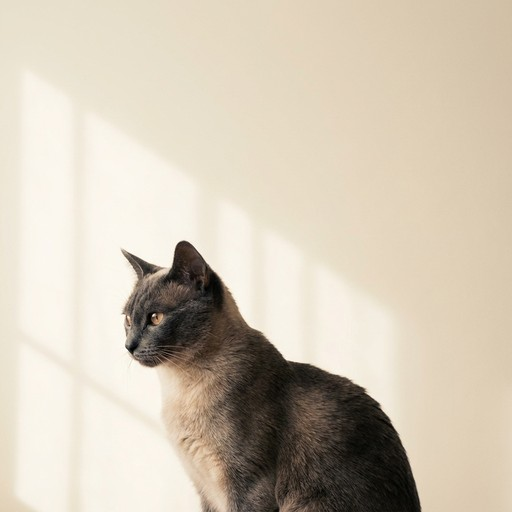
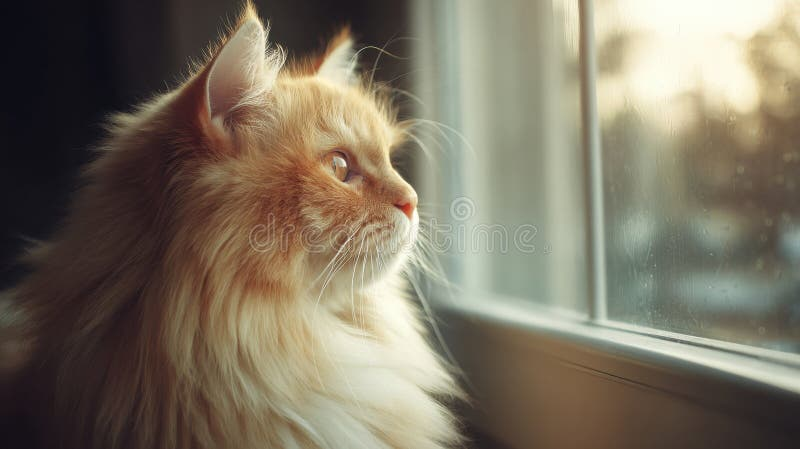
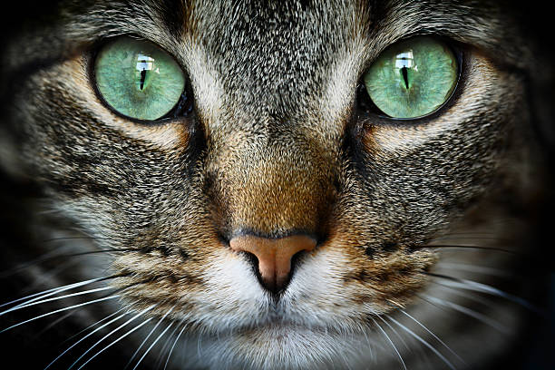
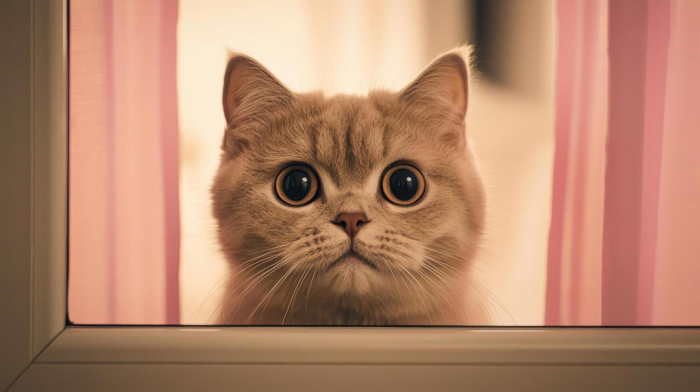

ВИДЕО · МЫСЛИ · РАЗБОРЫПосмотреть,
Посмотреть,
как я думаю.
Не про количество просмотров. Про возможность до обращения увидеть, как я говорю и объясняю сложные вещи.

01 / РЕШЕНИЯСкороРАЗБОР
Почему мы отменяем собственные решения
О тревоге, контроле и цене выбора.

02 / ПРАКТИКАСкороПРАКТИКА
Когда усталость — не про отдых
Как отличить выгорание от перегрузки.

03 / МЫСЛЬСкороМЫСЛЬ
Что происходит, когда бизнес становится продолжением личности
О границах, ответственности и невозможности остановиться.

04 / ПОДХОДСкороПОДХОД
Как выдерживать неопределённость
Практика присутствия в ситуации без готового ответа.
Первый шагНачать
Записаться на встречу ↗Начать
с сообщения.
Бесплатная диагностическая встреча на 20 минут: понять запрос, определить маршрут и честно обсудить, чем я могу быть полезен.